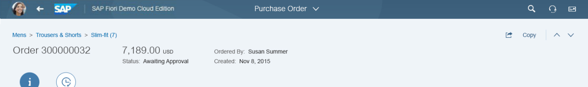
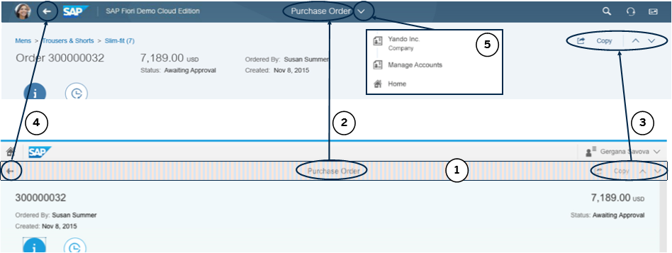

manifest.json file also known as descriptor for applications,
components and libraries.The SAP Fiori design guidelines provide recommendations with regards to the headers of applications and the SAP Fiori launchpad. If your application has a header, it needs to be merged into the standardized SAP Fiori header.
Legacy applications using the sap.m.Page, including the back button,
can use the header adapter to align their header layout with SAP Fiori design guidelines. The header
adapter specifically prevents duplicate headers and back buttons when displaying
these legacy applications in the SAP Fiori launchpad.
The screenshots in this topic are mockups and are used to visually outline the adaptations.

The complete adaptation of a fullscreen app to SAP Fiori design guidelines consists of five main steps:
Remove the app-specific header bar. The header is made transparent and collapsed if there is no content in it after the adaptation.
Display the title in the center of the SAP Fiori launchpad header.
Move the action buttons from the app header to the header content area below the SAP Fiori launchpad header.
Move the Back button from the app-specific header to the SAP Fiori launchpad header.
Drill-down hierarchy levels can be added to the dropdown menu adjacent to the SAP Fiori launchpad title.
You can see how the elements are moved and transformed from the legacy version to the updated SAP Fiori design in the following screenshot.

These adaptations are primarily valid only for fullscreen apps. Other floorplans, like List-Detail, are affected differently and the adaptation there will not be the same.
You can override the adapter default behavior for a single application by adding an
entry in the manifest in the sap.ui5/config section. Setting
sapFiori2Adaptation to true enables the
full functionality of the adapter.
"config": {
...
"sapFiori2Adaptation": true,
...
}
Alternatively, you can use five fine-grained settings to enable only some of the
adaptations. In the following example, you can see how to trigger transparent
headers (style attribute) and title propagation to SAP Fiori launchpad
(title attribute). The other adaptations are not applied.
"config": {
...
"sapFiori2Adaptation": {
"style": true,
"collapse": false,
"title": true,
"back": false,
"hierarchy": false
},
...
}
In the list below, you can see what each of the settings enables.
style - Triggers header transparency
collapse - Triggers collapsing of the header when empty
title - Triggers moving the header to SAP Fiori launchpad
back - Triggers the Back button
visibility in the app
hierarchy - Triggers propagation of the hierarchy to SAP Fiori launchpad
In rare cases this automatic adaptation of the header area may not work due to the application structure or other reasons. In this case, the headers will still appear in the old design but the apps will continue to be usable.
Some legacy SAP Fiori applications may not have a manifest. For such cases, there is an alternative configuration done in the <codeph>metadata</codeph> section of <codeph><emphasis>Component.js</emphasis></codeph> (the app's root component), which also has a <codeph>config</codeph> section. The configuration options can be done there in the same manner.
If both the metadata and manifest are configured and contradict each other, the configuration in manifest.json is applied.